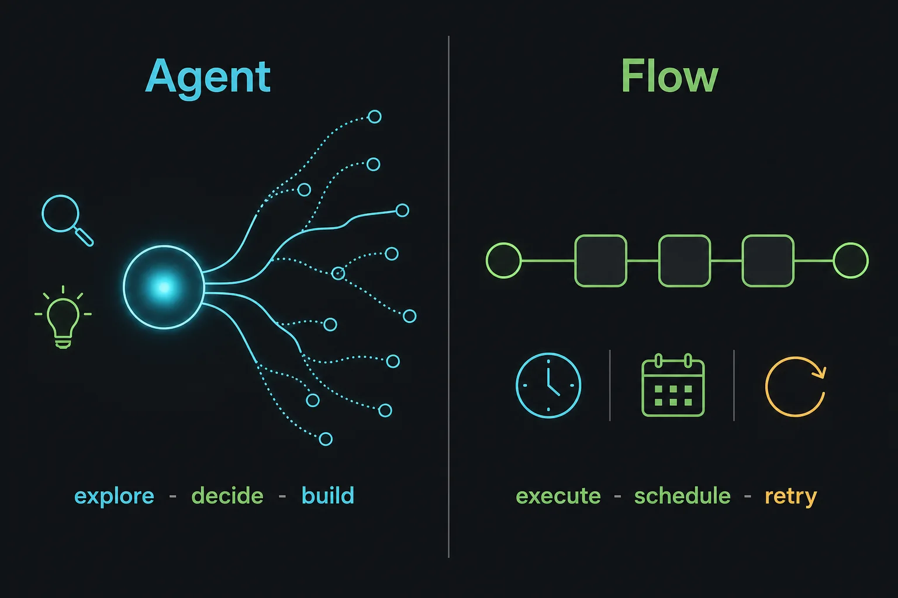

FAQ
Answers before the install.
The short version: PawFlow is a self-hosted runtime for agents, relays, shared context, media tools, and deterministic flow automation.

Is PawFlow a hosted agent cloud?
No. PawFlow is designed to be self-hosted. You run the server and decide which LLM providers, relays, workspaces, secrets, and media services are connected.
What leaves my machine?
It depends on provider and tool configuration. Prompts and selected context go to the chosen LLM provider. Relay tool requests cross from PawFlow to the relay. Media prompts and source media may go to configured media providers. Your deployment controls those boundaries.
Why use a relay?
The relay lets agents work next to a filesystem, shell, browser, desktop, or local service without giving the PawFlow server permanent direct filesystem access. It is the main boundary between orchestration and execution.
What is the difference between a server relay and a remote relay?
The server relay is the managed PawFlow-side relay service used for brokering and diagnostics. A remote relay is the client installed on the machine that owns the workspace or desktop, using Relay Desktop for a GUI install or Relay CLI for terminal/server machines.
Can agents use a full desktop?
Yes. With Desktop Relay, agents can inspect and operate a full desktop through screen, browser, and VNC-style tools. If the relay is started with `allow_local`, the accessible desktop can be the local desktop where that relay runs; otherwise the boundary is the relay container or configured remote desktop.
Can I open terminals from webchat?
Yes. The webchat workspace menu can expose terminals for the remote Docker relay workspace, the local host surface when `allow_local` is enabled, and the relay server/runtime environment for diagnostics. Keep those surfaces separate so operators know whether commands run in Docker, on the host, or in the relay runtime.
What are the context and memory editors?
The context editor lets an operator inspect and adjust the short-term context sent to the selected agent. The memory editor is for durable long-term memory: review, correct, delete, and audit remembered facts before they influence future turns.
How do interactive CLI providers run?
Subscription-backed interactive providers such as Claude Code interactive and Antigravity/Agy run through observable CLI sessions, including tmux-backed runtime state. This makes login, approvals, streaming, and provider-side issues inspectable from the relay/webchat tooling.
Where does VS Code/code-server fit?
The webchat can open VS Code/code-server against a linked relay workspace, so a human can inspect diffs, edit files, and run manual review while agents continue using the same relay-backed filesystem and tools.
Which LLM providers work?
PawFlow supports direct HTTP providers such as OpenAI, Anthropic, and OpenAI-compatible endpoints, plus CLI-backed coding agents including Codex app-server, Claude Code, Claude Code interactive, Antigravity/Agy, and Gemini CLI. Use Agy as the default Gemini subscription path; use Gemini CLI for Gemini Pro or CLI-specific workflows.
Can I talk to my agents from Telegram?
Yes. Telegram is a first-class client for the shared agent runtime. Add a telegramBot service with a BotFather token, deploy the Telegram agent flow (telegramReceiver + telegramAgentClient, plus telegramConversationBridge for live event mirroring), and link your Telegram account to a PawFlow user. You then reach the same conversations, agents, multi-agent context, attachments, and FileStore outputs as web chat, with text, documents, photos, voice, and slash commands. See the Telegram how-to.
Can I use several providers in one conversation?
Yes. Agents reference LLM services by id, so different agents in the same conversation can use different providers, models, credentials, permissions, and tool sets.
What is the difference between an agent and a flow?
An agent is useful for exploration, coding, reasoning, tool use, and maintenance. A flow is an explicit task graph for repeatable execution: triggers, routing, transforms, retries, checkpoints, and LLM calls only where modeled.
When is execution deterministic?
Flow execution is deterministic where it uses explicit tasks and fixed inputs. Any `inferLLM` or agent task remains intentionally model-driven, so you choose where variability is allowed.
Can agents edit my files?
Only through configured tools and relays. Use narrow permissions, approval gates, Docker relays for untrusted work, and read-only inspection before allowing edits, shell commands, deletes, or desktop control.
Can PawFlow generate media?
Yes. Agents can use provider-backed image, video, audio, voice, 3D, try-on, lipsync, and upscaling tools. Outputs should be stored as FileStore URLs or real files, not embedded as base64 in conversation text.
How do I enable TTS and STT?
Add a TTS service such as Supertonic, Voicebox, LuxTTS, or a compatible hosted provider, then add an STT service such as OpenAI-compatible STT or Voicebox. The webchat speaker and microphone controls use those services, and agents can also call voice tools such as `speak`, `clone_voice`, and `speech_to_video` when configured.
Can I run PawFlow on a VPS?
Yes. Use the Docker install path, persistent volumes, HTTPS or a reverse proxy, strong secrets, the Private Gateway for exposed demos, and restrictive relay/tool permissions.
Is PawFlow production-ready?
It is alpha software with a substantial runtime, docs, tests, and deployment path. Treat internet-facing deployments carefully: use production env settings, HTTPS, strong secrets, restricted tools, budget caps, and reviewed OAuth redirects.
How do I update a Docker install?
Pull the new image/tag and recreate the server container while keeping bind-mounted persistent data. Do not delete `~/pawflow` data unless you explicitly want a fresh install.
Ready enough to try
The fastest answer is still the quickstart.
Install locally, open the wizard, configure one provider, and test a relay-backed conversation.